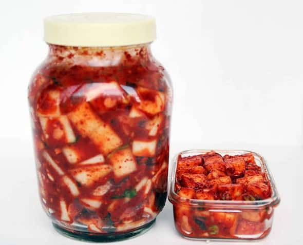

Fresh KkakDugi 깍두기
(Raddish Kimchi)
Kkakdugi is a type of kimchi made from diced radish. It is a common kind of kimchi and often used in Korean everyday meals. It’s spicy, salty, delicious, and is incredibly crunchy. Best of all, you can make perfect kkakdugi in an hour!
Ingredient:
1. 4 pounds Korean radish (or daikon)
2. 2 tbs kosher salt
3. 2 tbs sugar
4. ¼ cup fish sauce
5. ⅔ cup Korean hot pepper flakes (gochugaru)
6. 4 stalks of chopped green onions
7. 2 tbs minced garlic (about 5 or 6 cloves garlic)
8. 1 ts minced ginger
Preparation Time:
60 minutes.
Cooking Instructions:
1. Peel Korean radish, rinse in cold water and pat dry.
2. Cut it into ¾ to 1 inch cubes. Put into a large bowl.
3. Add kosher salt and sugar, and mix well. *tip: If you like your kkakdugi sweeter, add 1 or more extra tbs of sugar.
4. Set aside for 30 minutes. After that, drain the juice from the radish into a small bowl.
5. Add minced garlic, minced ginger, green onions, fish sauce, hot pepper flakes, and ⅓ cup of the juice from the radish. *tip: The amount of hot pepper flakes you use depends on your taste.
6. Mix it up well until the seasonings coat the radish cubes evenly, and the radish looks juicy.
7. Put the kkakdugi into a glass jar and press down on the top of it to remove any air from between the radish cubes.
8. You can eat it right away, and then store it in the refrigerator. Or you can let it ferment by keeping it outside of the refrigerator for a few days. When it starts fermenting, little bubbles may appear on top of the kkakdugi and it’ll smell strong & sour. Then put it in the refrigerator.
<-- Click on the links at the side to view the recipes!